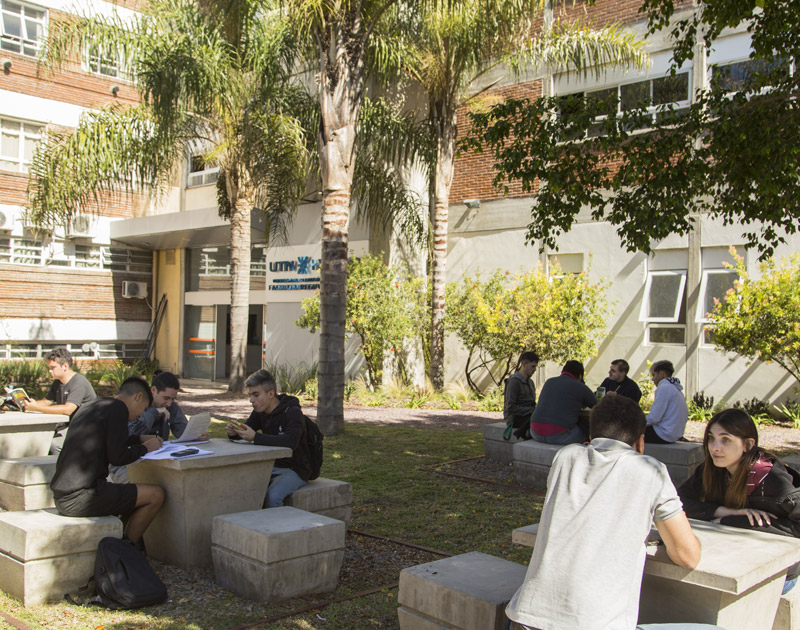
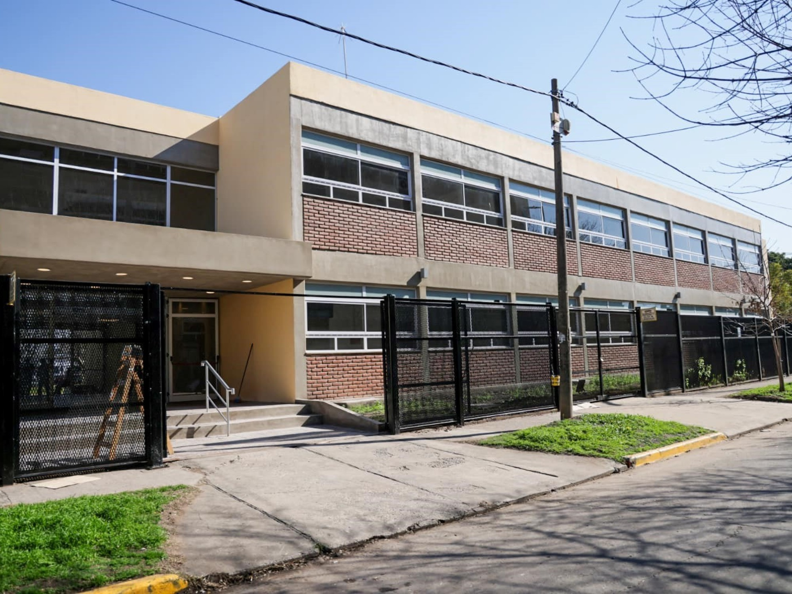
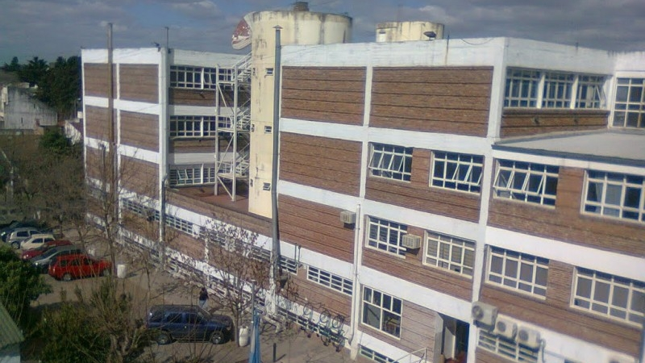

Fecha de Ingreso: 29/06/2006
Fecha de Salida: 30/12/2006
Curso de técnico electricista:
Durante mi formación como Técnico Electricista, adquirí competencias en el montaje y mantenimiento de instalaciones residenciales e industriales, especializándome en la interpretación de planos y el diagnóstico de fallas bajo normativas de seguridad vigentes.
Imágenes de la Institución:


